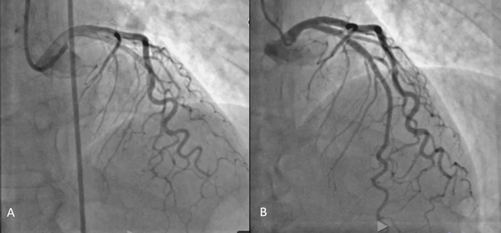
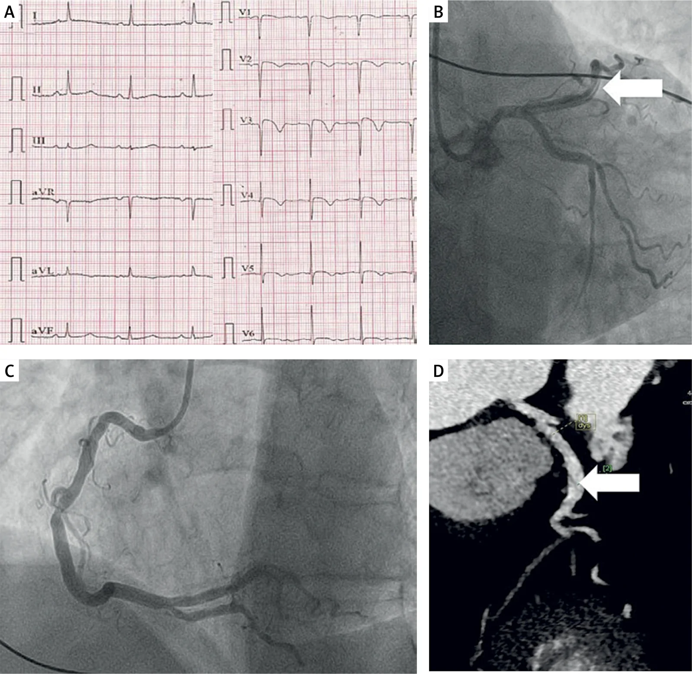
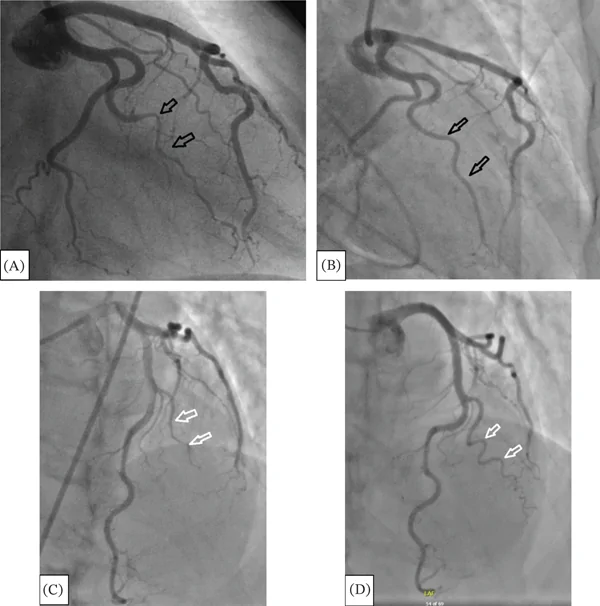

1900 — Bóc tách động mạch vành tự phát / Spontaneous coronary artery dissection (SCAD)
Tags: pattern:hep-dai-nhan pattern:hai-long-mach pattern:tac-mach-vanh vung:vanh protocol:chup-mach-vanh protocol:OCT-IVUS score:Yip-Saw incidentaloma:khong
Mức chắc chắn (certainty): tổng hợp y văn (literature synthesis) — số liệu từ một bài tổng quan có định lượng (PMC12387091), một tổng quan về SCAD ở nữ (PMC12780999), một phân tích cơ chế (PMC13381620), cùng ba ca nguyên văn có ảnh mạch vành (PMC13688006; PMC13721048; PMC13724152). Không có thử nghiệm ngẫu nhiên lớn; các ngưỡng điều trị là đồng thuận chuyên gia, chỗ suy luận được ghi rõ.
Câu chốt: SCAD là hội chứng mạch vành cấp KHÔNG do xơ vữa ở nữ trẻ – trung niên. Ba con số quyết định: (1) SCAD chiếm 1–5% ACS nhưng tới 22–43% nhồi máu cơ tim ở nữ < 50 tuổi; (2) 86,4% ổn định điều trị nội khoa, chỉ 2,3% trong số đó phải tái thông khẩn, và 70–95% tổn thương tự lành trên mạch máu trong 1–3 tháng; (3) không dùng tiêu sợi huyết — thuốc làm lan tách và tăng chảy máu trong thành; chẩn đoán bằng chụp mạch xâm lấn, không phải CTA (PMC12387091).
1. Tổng quan bệnh học – cơ chế hình ảnh (TẠI SAO)
1.1 Bệnh học: máu trong thành ép lòng thật
- SCAD là tách không do xơ vữa, không do can thiệp, không do chấn thương của thành động mạch vành, tạo khối máu trong thành (intramural hematoma, IMH) đè ép lòng thật (true lumen). Khác nứt mảng xơ vữa: không có mảng vữa/điểm canxi, không có nắp mảng điển hình.
- Hai mô hình sinh bệnh:
- Inside-out: rách nội mạc (intimal tear) → máu từ lòng mạch vào thành.
- Outside-in: vasa vasorum chảy máu trong thành → IMH hình thành trước, nội mạc còn nguyên. Mô hình thứ hai giải thích vì sao nhiều ca không thấy vết rách nội mạc trên OCT và vì sao can thiệp (bóng/dây dẫn) dễ làm lan tách.
- Nền tảng: loạn sản cơ xơ (fibromuscular dysplasia, FMD) — tổn thương mạch không do xơ vữa, không do viêm, với chuỗi hạt (string of beads) ở động mạch thận/cảnh; yếu tố nội tiết – thai kỳ, yếu tố cơ học (ho, gắng sức, căng thẳng) và bệnh mô liên kết làm ngưỡng chịu lực của thành mạch giảm (PMC13381620).
- TẠI SAO hẹp dài và nhẵn: IMH lan dọc giữa các lớp → lòng thật bị ép theo đoạn dài, bờ nhẵn, không có bờ nham nhở/gồ ghề như mảng xơ vữa. Vì không có mảng, không có canxi, không có tắc nghẽn mạn → thành mạch có thể trở lại bình thường hoàn toàn khi máu trong thành tiêu đi.
- TẠI SAO đau ngực + troponin: thiếu máu dưới nội tâm mạc do giảm dòng chảy; men tim tăng nhẹ – vừa hơn STEMI do tắc mạch hoàn toàn, nhưng vẫn có thể STEMI khi IMH bít hoàn toàn (type 4).
1.2 Dịch tễ và bối cảnh (số liệu định lượng)
- Tần suất: 1–5% tổng số ACS trong các loạt hiện đại; trước đây ước tính 0,1–0,4% (PMC12387091).
- Nữ < 50 tuổi: 22–43% các ca nhồi máu cơ tim, và 25–35% các ca ACS ở nữ dưới 50 tuổi (PMC12387091); một tổng quan khác ghi ~25% AMI ở nữ trẻ (PMC12780999).
- Tuổi/giới: tuổi trung bình ~40–50, 80–95% là nữ (PMC12387091).
- SCAD liên quan thai kỳ (P-SCAD): chiếm 5–30% các ca SCAD; là nguyên nhân của tới 40% nhồi máu cơ tim liên quan thai kỳ (PMC12387091) — thường 3 tháng cuối thai kỳ đến ≤ 3 tháng sau sinh.
- FMD: hiện diện ≈ 25% đến > 70% tùy phương pháp sàng lọc; > 70% ca SCAD không do xơ vữa có FMD khi sàng lọc kỹ (PMC12387091).
- Tái phát: 10–15% trong 3–5 năm; MACE tới 20% trong cùng khoảng; chẹn beta giảm tái phát khoảng 50% (PMC12387091).
1.3 Phân loại chụp mạch Yip–Saw (dùng để đọc và quyết định)
| Thể | Hình ảnh chụp mạch | Vì sao |
|---|---|---|
| Type 1 | Nhiều lòng sáng (radiolucent lumens) / hình hai lòng với thuốc cản quang vào lòng giả | Có vết rách nội mạc rõ, thuốc vào khoang tách |
| Type 2 (thường gặp nhất) | Hẹp dài, nhẵn, lan tỏa (thường > 20 mm), không có mảng xơ vữa; 2A đoạn xa bình thường, 2B hẹp tới tận đầu mạch | IMH lan dọc ép lòng thật; không có mảng |
| Type 3 | Hẹp khu trú ngắn (< 20 mm), giống mảng xơ vữa; < 5–10% ca | IMH khu trú; bắt buộc OCT/IVUS để phân biệt với mảng |
| Type 4 | Tắc hoàn toàn, đầu cụt; thường STEMI | IMH bít hoàn toàn lòng mạch |
- Bẫy đọc: type 3 không phân biệt được với mảng xơ vữa trên chụp mạch thường; OCT/IVUS là chốt. Type 2 dễ bị gọi là co thắt mạch hoặc "mạch bình thường" nếu không nhìn kỹ đoạn dài.
2. Mẫu hình + chẩn đoán phân biệt theo vị trí (gamut)
- Hẹp dài nhẵn ở LAD giữa – xa (type 2): SCAD; phân biệt co thắt mạch (vasospasm), cầu cơ (myocardial bridge), bóc tách do catheter (iatrogenic), tắc mạch do huyết khối.
- Hẹp khu trú ngắn (type 3): SCAD thể khu trú; phân biệt mảng xơ vữa, co thắt khu trú, tắc mạch nhỏ, viêm mạch.
- Tắc hoàn toàn (type 4): SCAD; phân biệt huyết khối do xơ vữa, thuyên tắc, co thắt nặng, bóc tách lan từ ĐMC.
- Đau ngực + ST chênh + mạch vành "sạch": SCAD, Takotsubo, viêm cơ tim, MINOCA khác; không được kết luận "không bệnh mạch vành" khi chưa loại SCAD type 2/3.
- Bối cảnh sau sinh/thai kỳ: SCAD là nguyên nhân hàng đầu của nhồi máu cơ tim; phân biệt bệnh cơ tim chu sản, tiền sản giật/HELLP và thuyên tắc ối (ba bệnh cảnh sản khoa có đau ngực/khó thở và men tim tăng).
3. Bảng so sánh phân biệt (ma trận đối chiếu)
| Thực thể (entity) | Hình ảnh điển hình (chụp mạch/OCT/CTA) | Chốt vào (rule-in) | Chốt loại (rule-out) | Gợi ý xác nhận |
|---|---|---|---|---|
| SCAD type 1 | Hai lòng / nhiều lòng sáng, thuốc vào lòng giả | Hình hai lòng + vết rách nội mạc | Không có lòng giả, chỉ hẹp trơn → type 2/3 | Chụp mạch nhiều góc; OCT nếu cần |
| SCAD type 2 | Hẹp dài nhẵn > 20 mm, không canxi, không mảng | Hẹp dài + bờ nhẵn + không vữa + bối cảnh nữ trẻ | Canxi/mảng lệch tâm, hẹp ngắn → xơ vữa | Chụp mạch; OCT xác nhận IMH |
| SCAD type 3 | Hẹp khu trú < 20 mm, giống mảng | OCT/IVUS: IMH/hai lòng, không mảng | Mảng xơ vữa có nắp/vữa → không phải SCAD | Bắt buộc OCT hoặc IVUS |
| Mảng xơ vữa (plaque rupture) | Hẹp lệch tâm, canxi, nắp mảng, huyết khối | Canxi + mảng + tuổi/tăng huyết áp/ĐTĐ/hút thuốc | Hẹp dài nhẵn không canxi → SCAD | OCT; CTA thấy canxi |
| Co thắt mạch (vasospasm) | Hẹp thay đổi, hết sau nitroglycerin | Hồi phục sau nitrate/CCB, không IMH | Hẹp cố định + IMH trên OCT → SCAD | Nitrate trong chụp mạch; OCT |
| Bóc tách do can thiệp (iatrogenic) | Tổn thương từ đầu catheter/dây dẫn, hình xoắn ốc | Tiền sử can thiệp ngay trước, vị trí đầu dụng cụ | Tổn thương xa đầu dụng cụ, lan dài → SCAD | Xem lại màn chiếu; OCT |
| Thuyên tắc mạch vành | Cắt cụt đột ngột, huyết khối, không IMH | Nguồn thuyên tắc (van, rung nhĩ, cơ tim) | IMH/hai lòng → SCAD | Siêu âm tim, OCT |
| Bóc tách ĐMC lan vào vành | Lóc ĐMC + tổn thương gốc vành, đau ngực–lưng | Lóc ĐMC trên CTA | ĐMC bình thường → SCAD | CTA toàn thân cấp cứu |
| Takotsubo | Rối loạn vận động vùng kiểu bóng đỉnh, mạch vành không tắc | Bóng đỉnh + hồi phục, mạch vành sạch | Hẹp dài/thrombus → SCAD | Siêu âm/MRI tim; có thể đồng thời |
4. Protocol chụp + hệ phân loại & xử trí
4.1 Protocol
- Chụp mạch vành xâm lấn (invasive coronary angiography) là chuẩn vàng: tối thiểu 4–6 góc cho mỗi hệ, phóng đại đoạn nghi; bơm nitroglycerin nội mạch để loại co thắt (thận trọng nếu huyết động kém).
- Tránh thao tác gây lan tách: không đẩy dây dẫn qua đoạn tách nếu không cần; không nong bóng mù; nếu bắt buộc can thiệp, dùng bóng nhỏ/áp lực thấp, cân nhắc cutting balloon, và không dùng stent phủ dài không cần thiết.
- OCT/IVUS khi: type 3 (phân biệt mảng), nghi ngờ, hoặc cần xác nhận IMH trước quyết định. OCT cho hình nội mạc/vết rách rõ hơn; IVUS xuyên được đoạn hẹp nặng hơn nhưng dễ làm lan tách — chỉ dùng khi có chỉ định rõ.
- CTA vành: KHÔNG dùng để chẩn đoán chính hoặc loại trừ SCAD cấp — độ phân giải không đủ cho nhánh xa/nhỏ, và artifact chuyển động gây âm tính giả (PMC12387091). CTA hữu ích để theo dõi tổn thương tồn tại (ảnh Ca 3) và sàng lọc mạch ngoài vành (đầu–cổ–thận–chậu) tìm FMD/phình.
- Siêu âm tim: đánh giá rối loạn vận động vùng, EF, biến chứng cơ học, tràn dịch màng tim; lặp lại sau 24–48 giờ nếu sốc.
- Xét nghiệm: troponin (đỉnh), ECG, creatinin, Hb, thai (β-hCG) ở nữ tuổi sinh sản; tầm soát bệnh mô liên kết khi có gợi ý.
4.2 Phân loại + flowchart xử trí
flowchart TD
A[Nghi SCAD: dau nguc + troponin o nu tre] --> B[Chup mach vanh xam lan]
B --> C{The Yip-Saw}
C -->|Type 1| D{Huyet dong on dinh?}
C -->|Type 2| D
C -->|Type 3| E[OCT hoac IVUS xac nhan IMH]
C -->|Type 4| F{STEMI + khong on dinh?}
E --> D
D -->|Co, khong thieu mau tien trien| G[Dieu tri noi khoa: aspirin + chen beta]
D -->|Khong: soc, dau nguc lien tuc, ST thay doi| H[Hoi suc + CABG uu tien]
F -->|Co| H
F -->|Khong| G
G --> I[Chup lai 1-3 thang; khong dung tieu soi huyet]
H --> J[Can thiep toi thieu; tranh nong bong manh]
- Điều trị nội khoa (ưu tiên): aspirin dài hạn; chẹn beta giảm tái phát ~50%; ức chế P2Y12 ngắn hạn nếu có can thiệp; không kháng đông thường quy; statin không có chỉ định mặc định (dữ liệu mâu thuẫn, có nghi vấn tăng tái phát — PMC12387091).
- Tái thông: chỉ khi thiếu máu tiến triển, sốc, đau ngực liên tục/ST thay đổi, hoặc tổn thương thân chung/LAD gần. CABG được ưu tiên hơn PCI ở thân chung/nhiều mạch vì PCI dễ làm lan tách; PCI chỉ khi giải phẫu thuận lợi và không thể tránh.
- TUYỆT ĐỐI KHÔNG tiêu sợi huyết (thrombolysis): làm lan khối máu trong thành, tăng chảy máu và tử vong — khác hoàn toàn STEMI do xơ vữa.
- Thai kỳ: tránh ergometrine (co mạch mạnh) sau sinh; oxytocin an toàn hơn; lập kế hoạch sinh tại trung tâm có can thiệp mạch vành và phẫu thuật tim; hội chẩn sản – tim – gây mê.
- Theo dõi: chụp mạch lại 1–3 tháng (hoặc khi có triệu chứng) để xác nhận lành; 70–95% lành trong 1–3 tháng (PMC12387091).
5. Biến thể bình thường và cạm bẫy
- Hẹp dài nhẵn không phải "co thắt" mặc định: nếu không hết sau nitrate và có bối cảnh nữ trẻ/ sau sinh, nghĩ SCAD type 2; đừng xuất viện với chẩn đoán "mạch vành bình thường".
- Type 3 giả mảng xơ vữa: hẹp ngắn ở nữ trẻ không yếu tố nguy cơ → OCT/IVUS trước khi đặt stent; đặt stent vào lòng giả làm bít nhánh bên và lan tách.
- CTA âm tính không loại trừ SCAD (nhánh xa/nhỏ, artifact) — quyết định dựa trên chụp mạch xâm lấn khi lâm sàng nghi.
- Tiêu sợi huyết là sai lầm chết người: nếu chẩn đoán STEMI trước khi chụp mạch, hỏi yếu tố nguy cơ SCAD (nữ trẻ, sau sinh, FMD) trước khi dùng.
- Đau ngực tái diễn sau SCAD không đồng nghĩa tái phát: có thể do co thắt, rối loạn chức năng vi mạch, lo âu; chỉ chụp lại khi có thay đổi ECG/troponin.
- Bỏ sót mạch ngoài vành: 25–>70% có FMD → sàng lọc CTA/MRA từ đầu đến chậu một lần, tìm phình/tách động mạch thận – cảnh – chậu; FMD không phải bệnh lành tính bỏ qua.
- Satisfaction of search: thấy hẹp LAD không được bỏ qua đoạn RCA/LCx — SCAD có thể nhiều mạch (ca nguyên văn báo đa mạch).
6. Tự lượng giá — Blind Quiz
Ca 1 — Nữ 42 tuổi, đau ngực điển hình, troponin tăng, không yếu tố nguy cơ xơ vữa.

- Câu hỏi: Mô tả tổn thương ở panel A? Đây là thể nào? Panel B nói lên điều gì về tiên lượng?
Bấm để hiện đáp án (findings + chẩn đoán)
- Findings: (A) hẹp dài, nhẵn, lan tỏa ở LAD giữa–xa, không canxi, không mảng lệch tâm; (B) sau điều trị nội khoa, lòng mạch trở lại gần bình thường.
- Chẩn đoán: SCAD type 2 (Yip–Saw) — IMH lan dọc ép lòng thật.
- Tiên lượng: lành tự nhiên 70–95% trong 1–3 tháng; điều trị aspirin + chẹn beta, không can thiệp nếu ổn định.
- Nguồn: Cureus 2026, PMC13688006, Fig. 1, CC BY 4.0.
Ca 2 — Nữ đã mãn kinh, đau ngực, ST chênh lên; chụp mạch và CTA theo dõi.

- Câu hỏi: Panel B cho thấy gì? Vì sao Panel D (CTA) không dùng để chẩn đoán cấp? Tại sao không tiêu sợi huyết?
Bấm để hiện đáp án
- Findings: (A) ECG ST chênh/T đảo; (B) chụp mạch LAD: hình hẹp/tách với vết rách (mũi tên); (C) RCA; (D) CTA vành sau 11 tháng: tổn thương tách còn tồn tại, xác nhận theo dõi chứ không phải chẩn đoán cấp.
- Chẩn đoán: SCAD ở nữ đã mãn kinh (không có yếu tố nguy cơ xơ vữa điển hình) — SCAD không chỉ gặp ở người trẻ.
- Vì sao CTA không phải chuẩn chẩn đoán: độ phân giải không đủ cho nhánh xa/nhỏ, artifact chuyển động → âm tính giả; chụp mạch xâm lấn mới là chuẩn.
- Vì sao không tiêu sợi huyết: thuốc làm lan IMH, tăng nguy cơ vỡ/tắc hoàn toàn — chống chỉ định khi nghi SCAD.
- Nguồn: Adv Interv Cardiol 2026, PMC13721048, Fig. 1, CC BY-NC-SA 4.0 (dùng nguyên bản).
Ca 3 — Bệnh nhân SCAD tái phát: so sánh 2015 và 2025.

- Câu hỏi: Panel A/B khác C/D ở đâu? Điều này nói gì về theo dõi dài hạn và nguy cơ tái phát?
Bấm để hiện đáp án
- Findings: (A/B) nhánh OM có hình tách/hẹp (mũi tên đen); (C/D) cùng nhánh sau nhiều năm: lành/tái thông, không còn hẹp rõ (mũi tên trắng).
- Chẩn đoán: SCAD nhánh OM đã lành tự nhiên; đây là ca tái phát ở mạch khác, nhấn mạnh SCAD là bệnh mạch hệ thống, không phải biến cố đơn lẻ.
- Theo dõi: tái phát 10–15% trong 3–5 năm, MACE tới 20%; chẹn beta giảm ~50% tái phát; sàng lọc FMD/mạch ngoài vành.
- Nguồn: Case Rep Cardiol 2026, PMC13724152, Fig. 2, CC BY 4.0.
Bài liên quan chéo
- 810 – CT động mạch vành & CAD-RADS
- 820 – MRI tim: LGE & mapping
- 850 – Loạn sản cơ xơ (FMD) toàn thân
- 1842 – Takotsubo sau phẫu thuật/ICU (bệnh cảnh bắt chước)
- 070 – Thuyên tắc phổi & ĐMC cấp (đau ngực cấp)
Ảnh
- Tên file:
1900_SCAD_ChupMach_{PMCID}.webp. Nguồn + giấy phép từng ảnh:images/CREDITS.md. - Không có ảnh ghép; ảnh CC BY-NC-SA dùng nguyên bản, không crop.
Không dùng để chẩn đoán độc lập khi chưa có người hướng dẫn.